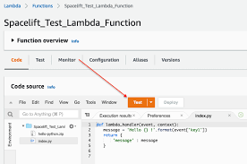
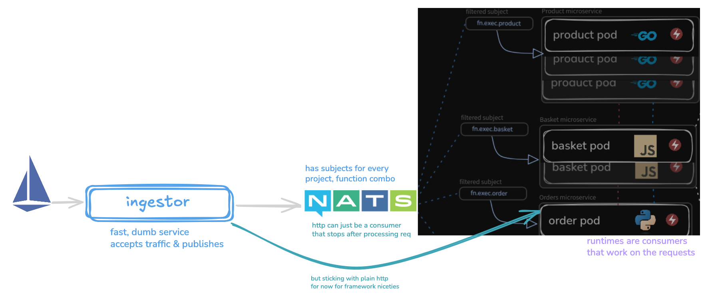
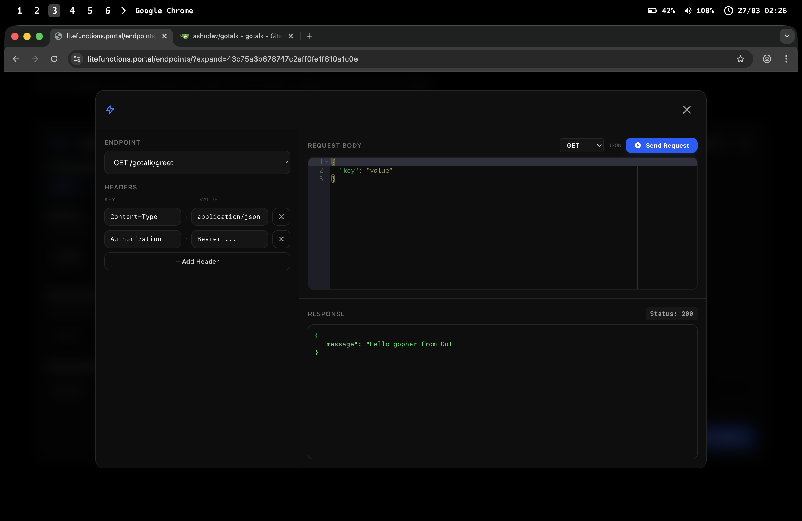
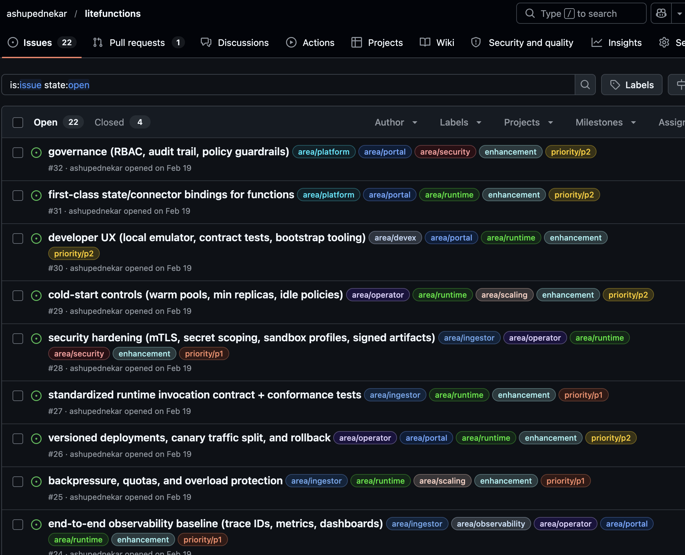

Building self hosted lambda
Building a functions as a service platform in Go from first principles
Building a functions as a service platform in Go from first principles
I wanted Lambda-like developer experience, but on my own cluster, with my own control plane.


helm install litefunctions oci://registry-1.docker.io/ashupednekar535/litefunctions



curl -sS -X POST "https://lambda.us-east-1.amazonaws.com/2015-03-31/functions/Spacelift_Test_Lambda_Function/invocations" \
-H "Content-Type: application/json" \
-d '{"key1":"world"}'

What actually has to happen when someone invokes a function?


// internal/auth/spec.go
type PasskeyUser interface {
webauthn.User
AddCredential(*webauthn.Credential) error
UpdateCredential(*webauthn.Credential) error
}
// internal/auth/spec.go
type PasskeyStore interface {
GetOrCreateUser(userName string) (PasskeyUser, error)
SaveCredential(user PasskeyUser, cred *webauthn.Credential) error
GetSession(token string) (webauthn.SessionData, bool)
SaveSession(username, token string, data webauthn.SessionData) error
SessionStore
}
-- migrations/00001_init_schema.sql -- +goose Up -- +goose StatementBegin CREATE TABLE projects ( id UUID PRIMARY KEY DEFAULT gen_random_uuid(), name TEXT NOT NULL UNIQUE, description TEXT, created_by BYTEA NOT NULL ); -- +goose StatementEnd
goose up
-- internal/project/adaptors/query.sql -- name: CreateProject :one INSERT INTO projects (name, description, created_by) VALUES ($1, $2, $3) RETURNING *; -- name: GetProjectByID :one SELECT * FROM projects WHERE id = $1;
sqlc generate
// generated shape (query.sql.go)
type CreateProjectParams struct {
Name string
Description pgtype.Text
CreatedBy []byte
}
func (q *Queries) CreateProject(ctx context.Context, arg CreateProjectParams) (Project, error)
// internal/project/repo/spec.go
type GitRepo struct {
Storage *memory.Storage
Fs billy.Filesystem
Repo *git.Repository
}
func NewGitRepo(project string, branch *string) (*GitRepo, error) {
fs := memfs.New() // in-memory billy FS
r := GitRepo{
Fs: fs, // no disk dependency
Storage: memory.NewStorage(), // in-memory git object db
Options: &git.CloneOptions{ URL: ... },
}
// SetupAuth -> Clone -> cache per project
}
// pseudocode path repo := NewGitRepo(project) repo.Fs.Create(path) // write function file in memfs repo.Commit(path) // git commit signature repo.Push() // vendor remote
// internal/project/vendors/spec.go
type VendorClient interface {
CreateRepo(ctx context.Context, opts CreateRepoOptions) (*Repository, error)
DeleteRepo(ctx context.Context, owner, repo string) error
AddWebhook(ctx context.Context, owner, repo string, opts WebhookOptions) (*Webhook, error)
AddWorkflow(project string) error
GetActionsProgress(ctx context.Context, owner, repo string, opts ActionsProgressOptions) (*ActionsProgress, error)
}
func NewVendorClient() (VendorClient, error) {
switch pkg.Cfg.VcsVendor {
case "github": return NewGitHubClient(pkg.Cfg.VcsToken), nil
case "gitea": return NewGiteaClient(pkg.Cfg.VcsBaseUrl, pkg.Cfg.VcsToken), nil
default: return nil, fmt.Errorf("unsupported vendor")
}
}



Clients hit the ingestor first—sync calls map to a straight HTTP request/response path.
Async work goes over the broker, the ingestor stays fast and dumb, publishes off the HTTP hot path, and runtimes subscribe and do the work
The ingestor can also request the operator to warm a function, basically set is_active on the Function CRD to true so reconcile runs.
Req + Produce · subject …exec.lang.reqIdpackage broker
type Req struct {
Project, Name, Lang, ReqId string
}
func Produce(
nc *nats.Conn,
w http.ResponseWriter,
r *http.Request,
lang string,
) (*websocket.Conn, *Req, error) {
// Upgrade; goroutine: ReadMessage → Publish
}
Read r.Body, then write headers and the response body on w in one goroutine—no channels; the “plate” is what you Encode or Write.
package pkg
import (
"encoding/json"
"net/http"
)
func Handle(w http.ResponseWriter, r *http.Request) {
var req map[string]any
_ = json.NewDecoder(r.Body).Decode(&req)
resp := map[string]any{"ok": true, "echo": req}
w.Header().Set("Content-Type", "application/json")
w.WriteHeader(http.StatusOK)
_ = json.NewEncoder(w).Encode(resp) // response body
}

Chunks arrive on input; you spin a goroutine that sends on out—like plates from the belt.
Runtime / WS can drain out to the wire—decoupled from one HTTP read.
package pkg
func StreamHandler(input <-chan []byte) <-chan []byte {
out := make(chan []byte)
go func() {
defer close(out)
for raw := range input {
c := transform(raw)
out <- c // may block (backpressure)
}
}()
return out
}
func transform(b []byte) []byte { return b }
FROM scratch COPY consumer /consumer USER 65532:65532 ENTRYPOINT ["/consumer"]
Ship small static binaries in distroless or scratch—images stay tiny (often tens of MB, few layers). Each function gets its own dedicated consumer pod that starts fast.
Scale each function up or down independently without dragging a shared interpreter along.
GOMAXPROCS follows Linux cgroup CPU limits—great in containers, but it breaks old assumptions that GOMAXPROCS tracked the whole host. Re-check load tests and pprof if you sized workers as “all CPUs.”FROM scratch means no libc—for HTTPS you need pure Go TLS (crypto/tls) and bundle CA certs if you verify remotes. Avoid CGO wrappers (e.g. libgit2): we used go-git with a billy-style filesystem so Git stays pure Go and the binary stays static-friendly. Same idea for any dep: prefer stdlib / pure Go over .so shims.FROM python:3.12-slim WORKDIR /app COPY requirements.txt . RUN pip install --no-cache-dir -r requirements.txt COPY runtime/ ./runtime/ COPY functions/ ./functions/ USER 65532:65532 CMD ["python", "-m", "runtime"]
Python / JS share a long-lived runtime per project: pull sources from VCS, then hot-reload into the running process—iteration without a full image rebuild every time.
Tradeoff: larger images (hundreds of MB, many layers) and slower cold paths than static binaries—balanced by that reload loop.
importlib + sys.modules—stale modules after hot swap; invalidate deliberately. GIL doesn’t fix races on shared globals across concurrent requests. JS (Node): require cache—bust or version modules on reload; one event loop, but shared mutable state still bites under load.Recover cleanly from partial failures without duplicating state.

Function CRD.package controller
type FunctionReconciler struct {
client.Client
Scheme *runtime.Scheme
}
func (r *FunctionReconciler) Reconcile(ctx context.Context, req ctrl.Request) (ctrl.Result, error) {
// Get Function; early-exit on NotFound
// If !IsActive: maybe delete Deployment+Service (skip if shared runtime still in use)
// If active: NewDeployment / NewService; SetControllerReference; Create or Update
// Patch Function.Spec.DeProvisionTime (keep-warm)
}


helm install litefunctions oci://registry-1.docker.io/ashupednekar535/litefunctions
